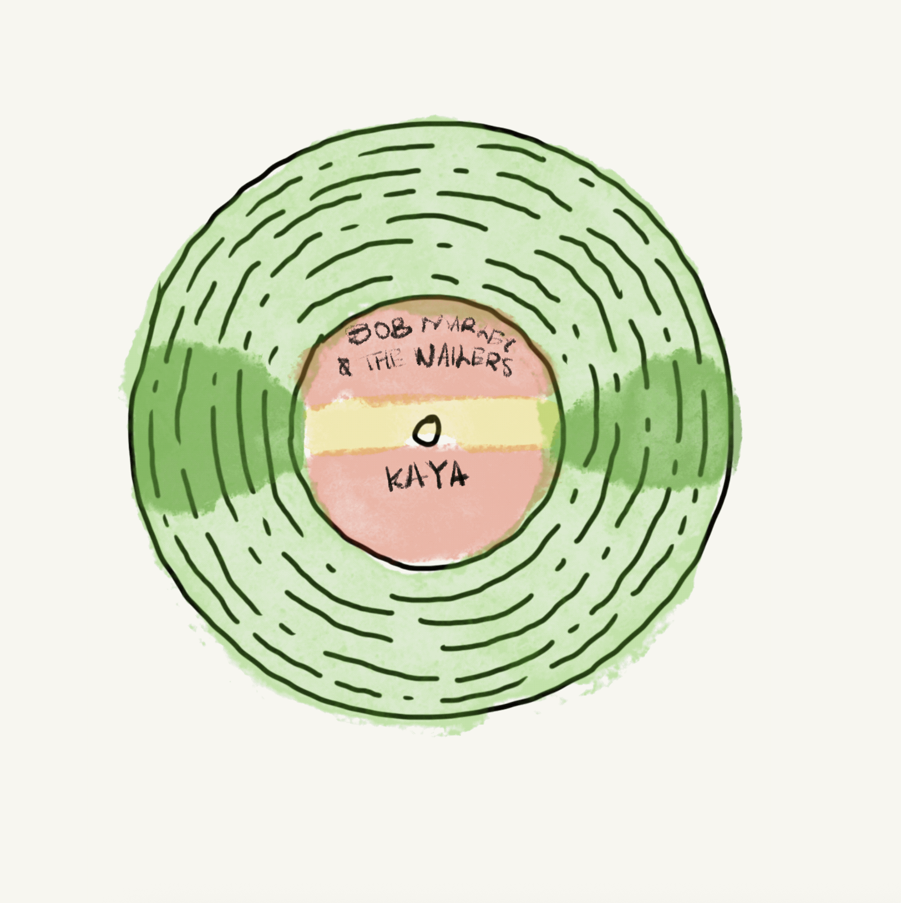
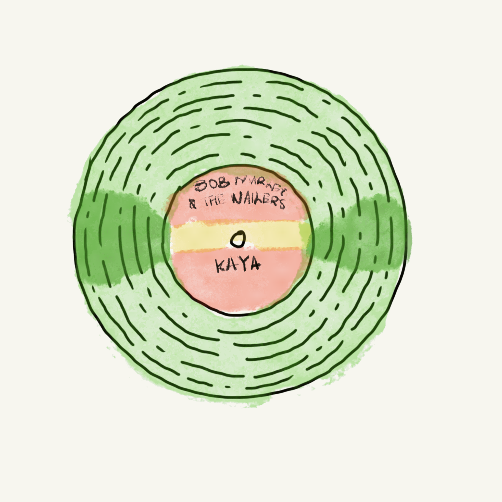

Sun is Shining
An all time fav of mine. Immediately bought the entire album after hearing Sun is Shining.


Hover over one of the vinyls below to hear some of my favorites
An all time fav of mine. Immediately bought the entire album after hearing Sun is Shining.
I found this gem in a very vintage looking record store in Japan. It was my first time travelling so this holds a special place in my heart.

A blend of R&B and funk. Steve put in his bare maximum for this one. I love every song in the album, that's all I'm going to say lol.
OKAYOKAYOKAYOKAYOKAY O- all jokes aside, this song carried me through this semester. See you again in Spring 2026.